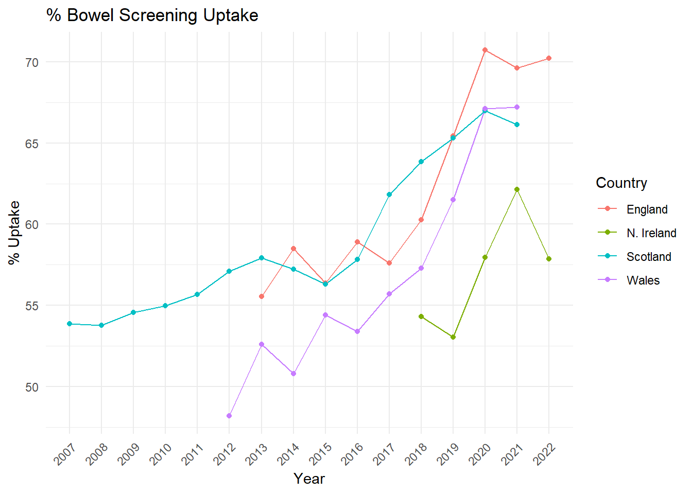
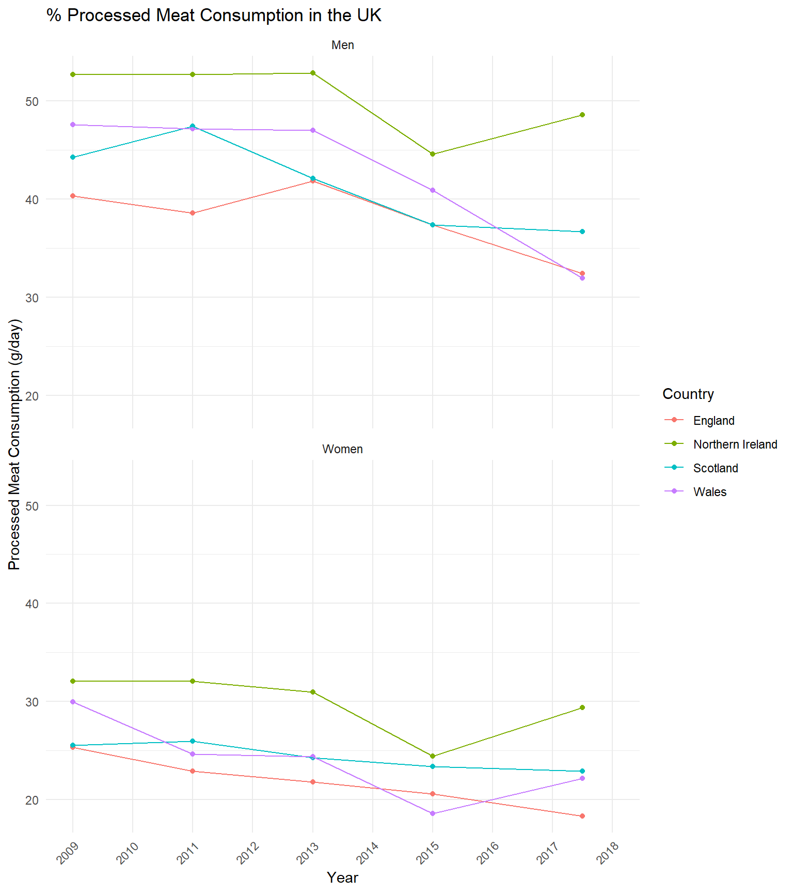

Final Position Paper Figures
Final plots for the ‘position’ paper. Organised by appearance.
Set-up
Packages
Filepaths
Visual Options
Functions
Here are functions for reading in data. They are specified by the data source as generally data is structured in similar ways. There are exceptions to this that have lead to individual functions.
Main
England Health Survey
England Health Survey (Diabetes Data)
Scottish Health Survey
National Survey for Wales
Health Survey Northern Ireland
Recent APC Table Function
Recent APC Barchart Function
Full Joinpoint Table Function
Meeting Mortality Target Table Generation
Additional Wales Data
Additional Wales data has been included past the original 4 years. It it all loaded in this chunk so that data can be drawn from it when it is needed.
Plot Generation
Main
Figure 1
Figure 1 is a plot showing the trend of incidence rates for all cancers combined (excl. NMSC) by country
Data Sources:
England - NHS England
Scotland - NHS Scotland
Northern Ireland - QUB Northern Ireland Cancer Registry
Wales - Public Health Wales
Figure 2
Figure 2 consists of four plots showing recent trends in APC by cancer site combined.
Data Sources:
England - NHS England
Scotland - NHS Scotland
Northern Ireland - QUB Northern Ireland Cancer Registry
Wales - Public Health Wales

Supplement
Figure 1
Supplement Figure 1 consists of plotting cancer incidence for all sites of interest
Data Sources:
England - NHS England
Scotland - NHS Scotland
Northern Ireland - QUB Northern Ireland Cancer Registry
Wales - Public Health Wales

Figure 2
Supplement Figure 2 consists of 3 graphs
Plotting parity over time
Plotting age at first birth over time
Plotting HRT usage over time
Parity
Data Sources:
England and Wales (Population Estimates) - ONS
England and Wales (Parity) - ONS

Age at First Birth
Data Sources:
England and Wales (Population Estimates) - ONS
England and Wales (Parity) - ONS

HRT
Data Sources:
England - NHS BSA

Figure 3
Figure 3 consists of two plots
Plotting Obesity trends by UK nation
Plotting Obesity trends in children in England
Obesity UK
Data Sources:
England - Health Survey England
Scotland - Scottish Health Survey
Northern Ireland - Health Survey Nothern Ireland
Wales - National Survey for Wales

Childhood Obesity England
Data Sources:
England - Health Survey England

Figure 4
Supplement Figure 4 is a graph showing the trends in doctor-diagnosed diabetes in the UK.
Data Sources:
England - Health Survey England
Scotland - Scottish Health Survey

Figure 5
Figure 5 displays trends in drinking above guidelines
Data Sources:
England - Health Survey England
Scotland - Scottish Health Survey
Northern Ireland - Health Survey Nothern Ireland
Wales - National Survey for Wales

Figure 6
Figure 6 details trends in physical activity over guidelines
Data Sources:
England - Health Survey England
Scotland - Scottish Health Survey
Northern Ireland - Health Survey Nothern Ireland
Wales - National Survey for Wales

Figure 7
Supplementary Figure 7 contains 2 graphs
Plotting smoking prevalance over time
Plotting E Cigarette usage over time
Smoking
Data Sources:
England - Health Survey England
Scotland - Scottish Health Survey
Northern Ireland - Health Survey Nothern Ireland
Wales - National Survey for Wales

E-Cigarette Usage
Data Sources:
England - Health Survey England
Scotland - Scottish Health Survey
Northern Ireland - Health Survey Nothern Ireland
Wales - National Survey for Wales

Figure 8
Figure 8 shows the trends in breast cancer screening uptake over time
Data Sources:
England - Fingertips
Scotland - Public Health Scotland
Northern Ireland - HSCNI
Wales - Public Health Wales

Figure 9
Figure 9 shows the trends in bowel screening uptake over time
Data Sources:
England - Fingertips
Scotland - Public Health Scotland
Northern Ireland - HSCNI
Wales - Public Health Wales

Additional variable generation
This section is to generate data on variables that aren’t being plotted here but may be useful.
% Overweight data (not Obese)
Fibre Intake

Processed Meat Consumption

Cancer Mortality - Meeting Targets
|
JP Target Analysis: England |
||||
| For a Goal of a 15% Reduction in Mortality by 2040 from 2024 | ||||
| Cancer | Sex | APC Required | Current APC | Year Achieved |
|---|---|---|---|---|
| All sites excl. NMSC | Men | -1.011 | -1.723 | 2033 |
| All sites excl. NMSC | Women | -1.011 | -1.549 | 2034 |
| Breast | Men | - | - | - |
| Breast | Women | -1.011 | -1.331 | 2036 |
| Colorectal | Men | -1.011 | -1.532 | 2034 |
| Colorectal | Women | -1.011 | -0.592 | 2051 |
| Lung | Men | -1.011 | -3.75 | 2028 |
| Lung | Women | -1.011 | -2.621 | 2030 |
| Oesophageal | Men | -1.011 | -0.909 | 2041 |
| Oesophageal | Women | -1.011 | -1.414 | 2035 |
| Pancreatic | Men | -1.011 | 0.539 | Inf |
| Pancreatic | Women | -1.011 | 0.15 | Inf |
| Prostate | Men | -1.011 | -1.178 | 2037 |
| Prostate | Women | - | - | - |
|
JP Target Analysis: Nothern Ireland |
||||
| For a Goal of a 15% Reduction in Mortality by 2040 from 2024 | ||||
| Cancer | Sex | APC Required | Current APC | Year Achieved |
|---|---|---|---|---|
| All sites excl. NMSC | Men | -1.011 | -0.866 | 2042 |
| All sites excl. NMSC | Women | -1.011 | -0.429 | 2061 |
| Breast | Men | - | - | - |
| Breast | Women | -1.011 | -1.196 | 2037 |
| Colorectal | Men | -1.011 | -1.59 | 2034 |
| Colorectal | Women | -1.011 | -1.219 | 2037 |
| Lung | Men | -1.011 | -1.98 | 2032 |
| Lung | Women | -1.011 | 1.305 | Inf |
| Oesophageal | Men | -1.011 | -0.182 | 2113 |
| Oesophageal | Women | -1.011 | -2.066 | 2031 |
| Pancreatic | Men | -1.011 | 0.265 | Inf |
| Pancreatic | Women | -1.011 | 0.5 | Inf |
| Prostate | Men | -1.011 | -0.864 | 2042 |
| Prostate | Women | - | - | - |
|
JP Target Analysis: Scotland |
||||
| For a Goal of a 15% Reduction in Mortality by 2040 from 2024 | ||||
| Cancer | Sex | APC Required | Current APC | Year Achieved |
|---|---|---|---|---|
| All sites excl. NMSC | Men | -1.011 | -1.319 | 2036 |
| All sites excl. NMSC | Women | -1.011 | -0.678 | 2047 |
| Breast | Men | - | - | - |
| Breast | Women | -1.011 | -1.897 | 2032 |
| Colorectal | Men | -1.011 | 0.46 | Inf |
| Colorectal | Women | -1.011 | 1.936 | Inf |
| Lung | Men | -1.011 | -2.356 | 2030 |
| Lung | Women | -1.011 | -1.001 | 2040 |
| Oesophageal | Men | -1.011 | -1.046 | 2039 |
| Oesophageal | Women | -1.011 | -1.047 | 2039 |
| Pancreatic | Men | -1.011 | 0.364 | Inf |
| Pancreatic | Women | -1.011 | 0.221 | Inf |
| Prostate | Men | -1.011 | -0.962 | 2040 |
| Prostate | Women | - | - | - |
|
JP Target Analysis: Wales |
||||
| For a Goal of a 15% Reduction in Mortality by 2040 from 2024 | ||||
| Cancer | Sex | APC Required | Current APC | Year Achieved |
|---|---|---|---|---|
| All sites excl. NMSC | Men | -1.011 | -1.132 | 2038 |
| All sites excl. NMSC | Women | -1.011 | -0.637 | 2049 |
| Breast | Men | - | - | - |
| Breast | Women | -1.011 | 2.406 | Inf |
| Colorectal | Men | -1.011 | -1.549 | 2034 |
| Colorectal | Women | -1.011 | -0.849 | 2043 |
| Lung | Men | -1.011 | -2.548 | 2030 |
| Lung | Women | -1.011 | -0.176 | 2116 |
| Oesophageal | Men | -1.011 | -0.614 | 2050 |
| Oesophageal | Women | -1.011 | -1.276 | 2036 |
| Pancreatic | Men | -1.011 | 0.285 | Inf |
| Pancreatic | Women | -1.011 | 0.591 | Inf |
| Prostate | Men | -1.011 | -1.616 | 2033 |
| Prostate | Women | - | - | - |
Output Figure data
Outputting data used for some of the figures in this document - this is so the data can be reused without having to be cleaned again separately. Also outputting data for use in JoinPoint analysis of the risk factor trends
Useful Plots
Collected here are plots that were not listed in the original list of plots for the paper - but have been mentioned since and might be added.
Plot Joinpoint Output

Tabulation Joinpoint Output
| Recent Trends in Risk Factors | ||||||||
| Variable | England | N. Ireland | Scotland | Wales | ||||
|---|---|---|---|---|---|---|---|---|
| Men | Women | Men | Women | Men | Women | Men | Women | |
| % Current Smoker | ↓ | ↓ | ↓ | ↓ | ↓ | ↓ | ↓ | ↓ |
| % Doctor Diagnosed Diabetes | ↑ | - | ↑ | ↑ | ||||
| % HRT Usage | ↑ | |||||||
| % Meet Physical Activity Guidelines | - | - | - | - | - | ↑ | - | - |
| % Obese | ↑ | ↑ | ↑ | ↑ | - | ↑ | - | - |
| % Over Weekly Alcohol Guidelines | - | - | ↓ | ↓ | ↓ | ↓ | - | - |
| *Arrow indicates a significant trend (P < .05) in the most recent APC | ||||||||
Full Tabulation of Cancer Trend Joinpoints
|
Cancer Incidence in England |
|||||||||||||
| Site | Sex | Segment 1 | Segment 2 | Segment 3 | Segment 4 | ||||||||
|---|---|---|---|---|---|---|---|---|---|---|---|---|---|
| Years | APC | Significant | Years | APC | Significant | Years | APC | Significant | Years | APC | Significant | ||
| All sites excl. NSMC | Women | (2000, 2002) | -0.3406 | NO | (2002, 2013) | 1.1758 | YES | (2013, 2019) | -0.1487 | NO | - | - | - |
| All sites excl. NSMC | Men | (2000, 2013) | 0.5838 | YES | (2013, 2019) | -0.3220 | NO | - | - | - | - | - | - |
| Breast | Women | (2000, 2004) | 1.6996 | YES | (2004, 2019) | 0.4946 | YES | - | - | - | - | - | - |
| Breast | Men | - | - | - | - | - | - | - | - | - | - | - | - |
| Colorectal | Women | (2000, 2002) | -1.9287 | NO | (2002, 2011) | 1.1610 | YES | (2011, 2017) | -1.2923 | YES | (2017, 2019) | 2.1111 | NO |
| Colorectal | Men | (2000, 2002) | -2.0473 | NO | (2002, 2011) | 1.0372 | YES | (2011, 2014) | -3.0354 | NO | (2014, 2019) | -0.5006 | NO |
| Lung | Women | (2000, 2002) | -1.0766 | NO | (2002, 2012) | 2.3339 | YES | (2012, 2019) | 0.5174 | YES | - | - | - |
| Lung | Men | (2000, 2002) | -4.6634 | YES | (2002, 2013) | -0.6498 | YES | (2013, 2019) | -1.7845 | YES | - | - | - |
| Oesophageal | Women | (2000, 2014) | -0.5685 | YES | (2014, 2019) | -1.7578 | YES | - | - | - | - | - | - |
| Oesophageal | Men | (2000, 2010) | 0.7126 | YES | (2010, 2019) | -0.2453 | NO | - | - | - | - | - | - |
| Pancreatic | Women | (2000, 2013) | 1.4414 | YES | (2013, 2019) | 0.0982 | NO | - | - | - | - | - | - |
| Pancreatic | Men | (2000, 2003) | -0.6147 | NO | (2003, 2019) | 1.1425 | YES | - | - | - | - | - | - |
| Prostate | Women | - | - | - | - | - | - | - | - | - | - | - | - |
| Prostate | Men | (2000, 2019) | 1.0477 | YES | - | - | - | - | - | - | - | - | - |
|
Cancer Incidence in Nothern Ireland |
||||||||||
| Site | Sex | Segment 1 | Segment 2 | Segment 3 | ||||||
|---|---|---|---|---|---|---|---|---|---|---|
| Years | APC | Significant | Years | APC | Significant | Years | APC | Significant | ||
| All sites excl. NSMC | Women | (2000, 2019) | 0.9690 | YES | - | - | - | - | - | - |
| All sites excl. NSMC | Men | (2000, 2008) | 1.4092 | YES | (2008, 2019) | -0.2406 | NO | - | - | - |
| Breast | Women | (2000, 2019) | 1.2456 | YES | - | - | - | - | - | - |
| Breast | Men | - | - | - | - | - | - | - | - | - |
| Colorectal | Women | (2000, 2011) | 0.8919 | NO | (2011, 2019) | -1.5517 | YES | - | - | - |
| Colorectal | Men | (2000, 2011) | 1.2617 | YES | (2011, 2019) | -2.8747 | YES | - | - | - |
| Lung | Women | (2000, 2019) | 2.7209 | YES | - | - | - | - | - | - |
| Lung | Men | (2000, 2011) | 0.2524 | NO | (2011, 2019) | -1.5423 | YES | - | - | - |
| Oesophageal | Women | (2000, 2003) | -10.3277 | NO | (2003, 2014) | 1.5818 | NO | (2014, 2019) | -6.9231 | YES |
| Oesophageal | Men | (2000, 2019) | 1.0111 | YES | - | - | - | - | - | - |
| Pancreatic | Women | (2000, 2013) | 2.4473 | YES | (2013, 2019) | -2.0080 | NO | - | - | - |
| Pancreatic | Men | (2000, 2019) | 1.6586 | YES | - | - | - | - | - | - |
| Prostate | Women | - | - | - | - | - | - | - | - | - |
| Prostate | Men | (2000, 2004) | 7.8485 | YES | (2004, 2019) | 0.3016 | NO | - | - | - |
|
Cancer Incidence in Scotland |
||||||||||
| Site | Sex | Segment 1 | Segment 2 | Segment 3 | ||||||
|---|---|---|---|---|---|---|---|---|---|---|
| Years | APC | Significant | Years | APC | Significant | Years | APC | Significant | ||
| All sites excl. NSMC | Women | (2000, 2012) | 0.8507 | YES | (2012, 2019) | -0.2919 | NO | - | - | - |
| All sites excl. NSMC | Men | (2000, 2014) | -0.0813 | NO | (2014, 2019) | -1.0308 | NO | - | - | - |
| Breast | Women | (2000, 2010) | 1.2223 | YES | (2010, 2019) | -0.0140 | NO | - | - | - |
| Breast | Men | - | - | - | - | - | - | - | - | - |
| Colorectal | Women | (2000, 2019) | -0.3306 | NO | - | - | - | - | - | - |
| Colorectal | Men | (2000, 2011) | 0.1019 | NO | (2011, 2015) | -4.4531 | YES | (2015, 2019) | 0.5159 | NO |
| Lung | Women | (2000, 2012) | 1.6887 | YES | (2012, 2019) | -0.4429 | NO | - | - | - |
| Lung | Men | (2000, 2014) | -1.2745 | YES | (2014, 2019) | -2.8383 | YES | - | - | - |
| Oesophageal | Women | (2000, 2015) | -0.4943 | NO | (2015, 2019) | -4.6677 | NO | - | - | - |
| Oesophageal | Men | (2000, 2002) | 5.8755 | NO | (2002, 2017) | -0.5144 | YES | (2017, 2019) | -6.8218 | NO |
| Pancreatic | Women | (2000, 2019) | 0.8048 | YES | - | - | - | - | - | - |
| Pancreatic | Men | (2000, 2019) | 0.7435 | YES | - | - | - | - | - | - |
| Prostate | Women | - | - | - | - | - | - | - | - | - |
| Prostate | Men | (2000, 2019) | 0.7517 | YES | - | - | - | - | - | - |
|
Cancer Incidence in Wales |
|||||||
| Site | Sex | Segment 1 | Segment 2 | ||||
|---|---|---|---|---|---|---|---|
| Years | APC | Significant | Years | APC | Significant | ||
| All sites excl. NSMC | Women | (2002, 2014) | 0.6853 | YES | (2014, 2019) | -1.1520 | YES |
| All sites excl. NSMC | Men | (2002, 2019) | -0.3551 | YES | - | - | - |
| Breast | Women | (2002, 2019) | 0.3268 | NO | - | - | - |
| Breast | Men | - | - | - | - | - | - |
| Colorectal | Women | (2002, 2008) | 2.0282 | NO | (2008, 2019) | -0.6202 | NO |
| Colorectal | Men | (2002, 2010) | 1.5660 | YES | (2010, 2019) | -1.9519 | YES |
| Lung | Women | (2002, 2019) | 1.1224 | YES | - | - | - |
| Lung | Men | (2002, 2008) | -0.4608 | NO | (2008, 2019) | -2.1166 | YES |
| Oesophageal | Women | (2002, 2019) | -1.7322 | YES | - | - | - |
| Oesophageal | Men | (2002, 2019) | -0.7603 | YES | - | - | - |
| Pancreatic | Women | (2002, 2019) | 0.3018 | NO | - | - | - |
| Pancreatic | Men | (2002, 2019) | 0.1269 | NO | - | - | - |
| Prostate | Women | - | - | - | - | - | - |
| Prostate | Men | (2002, 2019) | 0.0306 | NO | - | - | - |